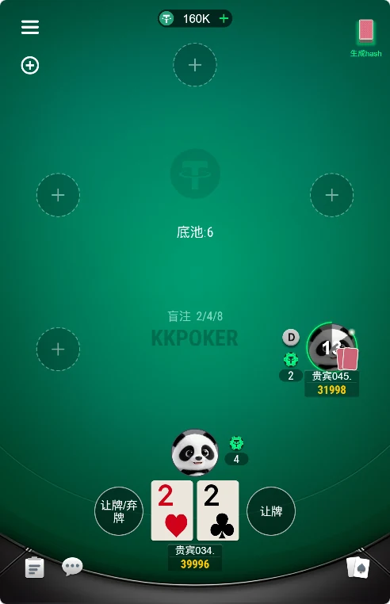

浏览器构建
需要真实构建产物、入口页、资源加载和主流移动浏览器兼容记录。
仓库公开的是 Cocos 风格 JavaScript 客户端结构，不等同于已经验证的浏览器 H5 版本。本页说明两者的核对重点。

需要真实构建产物、入口页、资源加载和主流移动浏览器兼容记录。
核对 HTTPS、WebSocket、断线重连、心跳、服务端权威状态和弱网表现。
验证触控、横竖屏、音频策略、资源体积、首屏时间和内存占用。
可以核对 JavaScript 场景、协议、控制器和 Lua 后端模块；当前公开内容不足以证明浏览器 H5 可直接运行。补充真实 H5 工程和部署说明后，才适合声明“H5德州源码”。